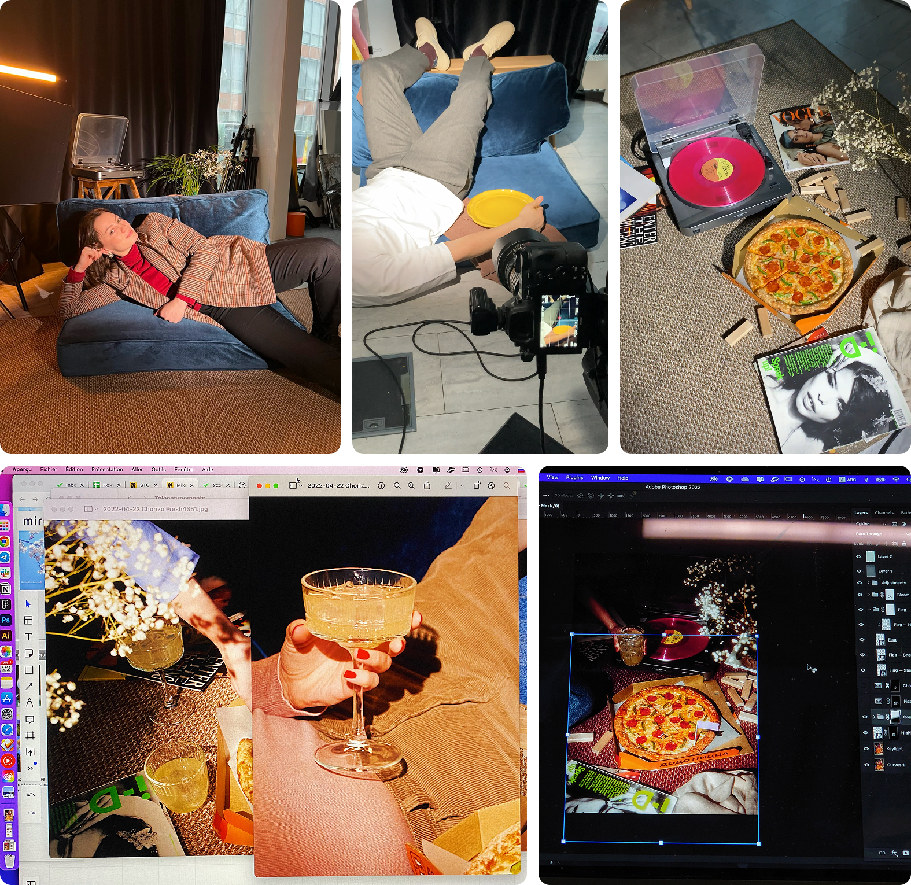

miek semyonov
Промо пиццы Чоризо фреш
2022
Пицца Чоризо фреш — одно из самых доступных предложений в продуктовой линейке Додо Пиццы. Простая, но вкусная с пряными нотками колбасок чоризо и тягучей моцареллой
Задача
Нужно было разработать ключевые визуалы и напомнить постоянным клиентам — заодно показать потенциальным, — что в Додо есть не только дорогие гурмэ-пиццы, а еще и доступные варианты
Основной аудиторий были молодые ребята — студенты и пары от 18 до 25 лет
Решение
В Додо пицца всегда была образом объединения и желания разделить теплые моменты с близкими — семьей и друзьями. Именно вокруг него и родилась идея дружеской вечеринки с настолками, ностальжи-музыкой и пиццей, пока родители на даче
Behind the scenes
Ира Кнутас, прообраз «luxury» дивана, Даня Дёмин в роли модели во время выставления кадра, свалка из реквизита с пиццей и скриншоты сборки ретуши фотографий

Команда проекта
Идея, арт-дирекшен и дизайн — Майк Семёнов
Копирайт — Мария Подопригора
Фотограф — Кирилл Затрутин
Фудстилисты — Яна Гордеева, Ульяна Корнеева, Ирина Кнутас
Реквизитор — Катя Ефименко
Ретушь — Катя Печёнкина